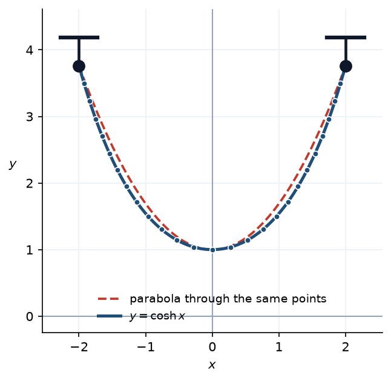
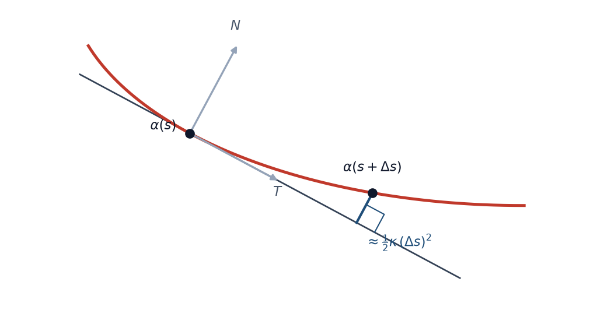
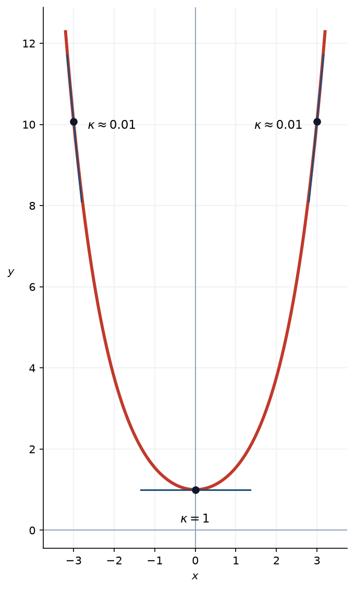

2 תרגול 2: גיאומטריה דיפרנציאלית של עקומות במישור
2.1 עקומות פרמטריות
מערכת קואורדינטות במרחב וקטורי מתאימה \(n\)-יות של מספרים לנקודות של המרחב, כך שלכל נקודה מתאימה \(n\)-יה.
פרמטריזציה מרחיבה את הרעיון הזה למשפחות רחבות יותר של קבוצות — אצלנו, תת-קבוצות של \(\mathbb{R}^n\).
נתחיל מהמקרה הפשוט ביותר, שבו תחום הפרמטרים הוא קטע.
הגדרה 2.1.1 — עקומה פרמטרית.
עקומה פרמטרית, או פרמטריזציה של עקומה, היא פונקציה רציפה \(\alpha : I \to \mathbb{R}^n\), כאשר \(I \subseteq \mathbb{R}\) הוא קטע — פתוח, סגור או חצי-פתוח, חסום או לא חסום. ניתן לייצג עקומה כווקטור עמודה (או כווקטור שורה) \[.\alpha(t) = \begin{pmatrix} \alpha^1(t) \\ \alpha^2(t) \\ \alpha^3(t) \\ \vdots \\ \alpha^n(t) \end{pmatrix}\] האינדקסים כתובים למעלה, ו-\(\alpha^i(t)\) הוא הרכיב ה-\(i\) של הווקטור — לא חזקה.
הערה 2.1.2.
רציפות לבדה חלשה מכדי להגדיר עקומה: קיימות העתקות רציפות מקטע על ריבוע שלם (עקומות פאנו והילברט), והתמונה שלהן היא עצם דו-ממדי מלא — ובוודאי לא מה שהיינו רוצים לכנות עקומה. לכן נדרוש יותר: ש-\(\alpha\) תהיה גזירה ברציפות, לפחות למקוטעין. בדרך כלל נניח \(\alpha \in C^2\).
הערה 2.1.3 — עקומה פרמטרית היא מסלול, לא קבוצה.
ניתן להתייחס ל-\(t\) כאל זמן: דרך נוחה לחשוב על פרמטריזציה היא כעל נקודה הנעה במהלך קטע זמן, כאשר \(\gamma(t)\) הוא מיקומה בזמן \(t\). לכן \(\gamma\) מתארת את המסלול — האופן שבו עוברים על הקבוצה — ולא רק את הקבוצה עצמה, שהיא בסך הכול התמונה \(\gamma(I)\).
מנקודת מבט זו ברור שפרמטריזציה אינה חייבת להיות חד-חד-ערכית: אותה קבוצה עצמה יכולה להתקבל ממסלולים שונים — במהירויות שונות, בכיוונים שונים, ואף תוך מעבר על אותה נקודה יותר מפעם אחת. כך למשל נקודה על מעגל נקבעת על ידי זווית, אך את אותה נקודה אפשר לתאר בזוויות רבות: הוספת סיבוב שלם, או מדידה בכיוון ההפוך, מחזירה אותנו אליה. לעומת זאת, כשאומרים ש-\(\gamma\) היא פרמטריזציה של קבוצה נתונה, כן נדרוש שהתמונה תהיה הקבוצה כולה.
תרגילים
שאלה 2.1.4.
מצאו פרמטריזציה לישר העובר דרך הנקודה \(p\) בכיוון הווקטור \(v \neq 0\).
פתרון.
הישר הוא בדיוק הקבוצה \[,\left\{ p + tv \ : \ t \in \mathbb{R} \right\}\] ולכן הפרמטריזציה מיידית: \[.\gamma(t) = p + tv, \qquad t \in \mathbb{R}\] אם \(p = (p_1, p_2)\) ו-\(v = (v_1, v_2)\), אז רכיב-רכיב \[.\gamma(t) = \left( p_1 + t v_1,\ p_2 + t v_2 \right)\]
ההכלה והכיסוי מיידיים מהגדרת הישר: כל \(\gamma(t)\) נמצא עליו, וכל נקודה שעליו היא מהצורה \(p + tv\) עבור \(t\) מתאים.
שלוש דרכים לעבור על אותו ישר. אותו ישר מתקבל גם מ-\(\tilde{\gamma}(t) = p + 2tv\), העוברת עליו במהירות כפולה, וגם מ-\(\hat{\gamma}(t) = p - tv\), העוברת עליו בכיוון ההפוך. לשלוש הפרמטריזציות אותה תמונה בדיוק.
שאלה 2.1.5.
מצאו פרמטריזציה לאליפסה \(\dfrac{x^2}{a^2} + \dfrac{y^2}{b^2} = 1\), כאשר \(a, b > 0\), והראו שהיא מכסה את האליפסה כולה.
פתרון.
הרעיון. מעגל היחידה \(x^2 + y^2 = 1\) מפורמטר על ידי \((\cos t, \sin t)\), משום שזהות היסוד \(\cos^2 t + \sin^2 t = 1\) היא בדיוק משוואתו. נכתוב את משוואת האליפסה בצורה דומה: \[,\left( \frac{x}{a} \right)^2 + \left( \frac{y}{b} \right)^2 = 1\] כלומר הזוג \(\left( \frac{x}{a},\ \frac{y}{b} \right)\) נמצא על מעגל היחידה. לכן נציב \[,\frac{x}{a} = \cos t, \qquad \frac{y}{b} = \sin t\] ומתקבלת \[.\gamma(t) = \left( a\cos t,\ b \sin t \right), \qquad t \in [0, 2\pi]\]
הכלה. נציב במשוואת האליפסה: \[.\frac{\left( a \cos t \right)^2}{a^2} + \frac{\left( b\sin t \right)^2}{b^2} = \cos^2 t + \sin^2 t = 1\] ולכן כל נקודה מהצורה \(\gamma(t)\) אכן נמצאת על האליפסה.
כיסוי. תהי \((x,y)\) נקודה כלשהי על האליפסה. אז \(\left( \frac{x}{a},\ \frac{y}{b} \right)\) נמצאת על מעגל היחידה, ולכן קיים \(t \in [0, 2\pi)\) יחיד המקיים \(\frac{x}{a} = \cos t\) ו-\(\frac{y}{b} = \sin t\). עבור \(t\) זה \(\gamma(t) = (x,y)\), ולכן התמונה היא האליפסה כולה.
שאלה 2.1.6.
האם \(\gamma(t) = \left( t^2, t^4 \right)\) היא פרמטריזציה של הפרבולה \(y = x^2\)?
פתרון.
נסמן \(\gamma(t) = (\gamma_1(t), \gamma_2(t))\), כלומר \(\gamma_1(t) = t^2\) ו-\(\gamma_2(t) = t^4\). נבדוק תחילה אם כל נקודה על העקומה מקיימת את משוואת הפרבולה: \[,\gamma_2(t) = t^4 = \left( t^2 \right)^2 = \gamma_1(t)^2\] ולכן כל נקודה מהצורה \(\gamma(t)\) אכן מקיימת \(y = x^2\); כלומר התמונה מוכלת בפרבולה.
אבל זה אינו מספיק: פרמטריזציה של עקומה צריכה לכסות את כל העקומה. נשים לב ש- \[,\gamma_1(t) = t^2 \geq 0\] לכל \(t \in \mathbb{R}\), ולכן קואורדינטת ה-\(x\) של כל נקודה בתמונה היא אי-שלילית. לעומת זאת, על הפרבולה \(y = x^2\) יש נקודות עם \(x < 0\), למשל \((-1, 1)\), המקיימת \(1 = (-1)^2\).
נראה שנקודה זו אינה בתמונה: אילו הייתה קיימת \(t\) עם \(\gamma(t) = (-1,1)\), היינו מקבלים \(t^2 = -1\), ולמשוואה זו אין פתרון ממשי.
מסקנה. \(\gamma\) אינה פרמטריזציה של הפרבולה כולה, אלא רק של החצי הימני שלה, \[.\left\{ (x, x^2) \ : \ x \geq 0 \right\}\]
שאלה 2.1.7.
מצאו את המשוואה הקרטזית של העקומה \(\gamma(t) = \left( \cos^2 t,\ \sin^2 t \right)\), ותארו במדויק את התמונה שלה.
פתרון.
נסמן \(x = \cos^2 t\) ו-\(y = \sin^2 t\). מזהות היסוד הטריגונומטרית \[,x + y = \cos^2 t + \sin^2 t = 1\] ולכן כל נקודה על העקומה נמצאת על הישר \(x + y = 1\).
גם כאן נבדוק מהי התמונה המדויקת. מכיוון ש-\(\cos t \in [-1,1]\), מתקיים \[,x = \cos^2 t \in [0,1]\] ובאותו אופן \(y \in [0,1]\). מצד שני, כאשר \(t\) עובר על הקטע \(\left[ 0, \frac{\pi}{2} \right]\) הפונקציה \(\cos^2 t\) רציפה ויורדת מ-\(1\) ל-\(0\), ולכן לפי משפט ערך הביניים היא מקבלת כל ערך בקטע \([0,1]\).
מסקנה. התמונה היא בדיוק הקטע \[,\left\{ (x,y) \ : \ x + y = 1,\ 0 \leq x \leq 1 \right\}\] המחבר את \((1,0)\) ל-\((0,1)\), ולא הישר כולו. שימו לב שהעקומה עוברת על הקטע הזה הלוך ושוב אינסוף פעמים.
שאלה 2.1.8.
תהי \(\gamma(t) = \left( t^3 - 4t,\ t^2 - 4 \right)\), \(t \in \mathbb{R}\). הראו ש-\(\gamma\) אינה חד-חד-ערכית, ומצאו את נקודת החיתוך העצמי.
פתרון.
נחפש \(t_1 \neq t_2\) שעבורם \(\gamma(t_1) = \gamma(t_2)\). השוואת הרכיב השני נותנת \[,t_1^2 - 4 = t_2^2 - 4 \ \Longrightarrow\ t_1^2 = t_2^2 \ \Longrightarrow\ t_2 = \pm t_1\] ומכיוון ש-\(t_1 \neq t_2\) נותר רק \(t_2 = -t_1\).
נציב זאת ברכיב הראשון: \[,t_1^3 - 4t_1 = (-t_1)^3 - 4(-t_1) = -t_1^3 + 4t_1\] ולכן \[,2t_1^3 - 8t_1 = 0 \ \Longrightarrow\ 2t_1 \left( t_1^2 - 4 \right) = 0\] כלומר \(t_1 = 0\) או \(t_1 = \pm 2\).
הפתרון \(t_1 = 0\) גורר \(t_2 = 0\), בסתירה ל-\(t_1 \neq t_2\). נותרו \(t_1 = 2\) ו-\(t_2 = -2\). נציב ונוודא: \[,\gamma(2) = \left( 8 - 8,\ 4 - 4 \right) = (0,0)\] \[.\gamma(-2) = \left( -8 + 8,\ 4 - 4 \right) = (0,0)\]
מסקנה. \(\gamma(2) = \gamma(-2) = (0,0)\), ולכן \(\gamma\) אינה חד-חד-ערכית ונקודת החיתוך העצמי היא הראשית.
2.2 מהירות, רגולריות ואורך קשת
הגדרה 2.2.1 — וקטור המהירות והמהירות הסקלרית.
אם העקומה גזירה, וקטור המהירות שלה הוא \[,\alpha'(t) = \begin{pmatrix} \alpha^{1\prime}(t) \\ \alpha^{2\prime}(t) \\ \vdots \\ \alpha^{n\prime}(t) \end{pmatrix}\] והוא נותן את כיוון התנועה ואת קצב השינוי הווקטורי. המהירות הסקלרית היא אורכו של וקטור זה, \[.v(t) = \left\| \alpha'(t) \right\|\]
הגדרה 2.2.2 — פרמטריזציה במהירות יחידה.
אם \(\left\| \alpha'(t) \right\| = 1\), אז \(\alpha(t)\) נקראת פרמטריזציה במהירות יחידה, או פרמטריזציית אורך קשת.
הגדרה 2.2.3 — פרמטריזציה רגולרית.
נאמר שהפרמטריזציה של עקומה \(\alpha : I \to \mathbb{R}^n\) היא רגולרית אם לכל \(t\) הנגזרת \(\alpha'(t)\) קיימת ומתקיים \[.\alpha'(t) \neq 0\] נקודות \(t\) שבהן \(\alpha'(t)\) אינה קיימת, או שבהן \(\alpha'(t) = 0\), נקראות נקודות סינגולריות של \(\alpha\). בנקודה רגולרית קו המשיק לעקומה קיים, ולכן נתמקד בעקומות ללא נקודות סינגולריות.
הגדרה 2.2.4 — גזירות ברציפות למקוטעין.
פונקציה \(\alpha : [a,b] \to \mathbb{R}^n\) נקראת גזירה ברציפות למקוטעין אם היא רציפה, וקיימת חלוקה \(a = c_0 < c_1 < \dots < c_k = b\) כך שבכל קטע \([c_{i-1}, c_i]\) הפונקציה \(\alpha\) גזירה ברציפות — כאשר בקצות הקטע מדובר בנגזרות חד-צדדיות.
הגדרה 2.2.5 — אורך עקומה.
תהי \(\alpha : I \to \mathbb{R}^n\) גזירה ברציפות למקוטעין. אורך העקומה בקטע \([t_1, t_2]\) מוגדר על ידי \[,L = \int_{t_1}^{t_2} \left\| \alpha'(t) \right\| dt\] כלומר האינטגרל של גודל וקטור המהירות. ב-\(\mathbb{R}^2\), עבור \(\alpha(t) = \left( \alpha^1(t),\ \alpha^2(t) \right)\), מתקבל \[.L = \int_{t_1}^{t_2} \sqrt{\left( \alpha^{1\prime}(t) \right)^2 + \left( \alpha^{2\prime}(t) \right)^2}\, dt\]
הגדרה 2.2.6 — פרמטריזציות שקולות.
תהי \(\alpha : I \to \mathbb{R}^n\) עקומה פרמטרית. נאמר ש-\(\beta : J \to \mathbb{R}^n\) שקולה ל-\(\alpha\) אם קיימת פונקציה \(\varphi : J \to I\) רגולרית, חד-חד-ערכית ועל, כך ש-\[.\beta = \alpha \circ \varphi\]
הערה 2.2.7.
זוהי למעשה הרחבה של המושג החלפת קואורדינטות. פרמטריזציות שקולות שומרות על תכונות כמו רגולריות, ועל מספר הפעמים שהפרמטריזציה עוברת בכל נקודה.
הגדרה 2.2.8 — פרמטריזציה טבעית.
נגדיר \[,s(t) = \int_0^t \left\| \alpha'(u) \right\| du = \int_0^t \sqrt{\left( \alpha^{1\prime}(u) \right)^2 + \left( \alpha^{2\prime}(u) \right)^2}\, du\] פונקציה המתארת את האורך של \(\alpha\) מזמן \(0\) עד זמן \(t\). היא מונוטונית עולה ממש, ולכן הפיכה; אם נסמן את הפונקציה ההופכית ב-\(t(s)\) ונציב, נקבל את הפרמטריזציה הטבעית \[.r(s) = \alpha(t(s))\] בנוסף מתקיים \[.\frac{ds}{dt} = \left\| \alpha'(t) \right\|\]
סימולציה 2.2.9 — אותה נקודה, שתי פרמטריזציות של המעגל.
שתי פרמטריזציות של מעגל היחידה. הראשונה היא הפרמטריזציה הרגילה \[,\alpha(\theta) = \left( \cos\theta,\ \sin\theta \right), \qquad \theta \in \left[ 0,\ 2\pi \right]\] והשנייה \[.\beta(x) = \left( \cos\left( e^x - 1 \right),\ \sin\left( e^x - 1 \right) \right), \qquad x \in \left[ 0,\ \ln\left( 2\pi + 1 \right) \right]\]
טענה 2.2.10.
פרמטריזציית אורך קשת היא פרמטריזציה במהירות יחידה.
הערה 2.2.11.
גם ההיפך נכון: אם הפרמטריזציה היא בעלת מהירות יחידה עם פרמטר \(t\), אז \(t\) הוא פרמטר אורך קשת, שכן \(\left\| \alpha'(t) \right\| = 1\) ולכן \[.s = \int_0^t 1\, du = t\]
תרגילים
שאלה 2.2.12.
חשבו את אורך הקשת של קו השרשרת \(\gamma(t) = \left( t,\ \cosh t \right)\), החל מהנקודה \((0,1)\).
התוצאה תשמש בהמשך בשאלה 2.4.9, בחישוב העקמומיות של קו השרשרת.
הערה 2.2.13 — קו שרשרת.
העקומה \(\gamma(t) = \left( t,\ \cosh t \right)\) נקראת קו שרשרת, והשם אינו מקרי: זוהי בדיוק הצורה שאותה מקבלת שרשרת אחידה וגמישה לחלוטין, התלויה בחופשיות משני קצותיה תחת משקלה שלה (בלטינית catena — שרשרת). גלילאו שיער שהצורה היא פרבולה, אך היא אינה פרבולה; הפתרון הנכון, \(y = \cosh x\), נמצא בשנת 1691 באופן בלתי תלוי על ידי הויגנס, לייבניץ ויוהאן ברנולי. שרשרת תלויה שטוחה יותר במרכזה מפרבולה, ומתרוממת בתלילות רבה יותר בקצוות.

בכחול — שרשרת התלויה בין שתי נקודות; באדום ומקווקו — הפרבולה העוברת דרך אותן שתי נקודות ובעלת אותה נקודה נמוכה. קו השרשרת שטוח יותר בתחתית ותלול יותר בקצוות, ולכן הוא נמצא כולו מתחת לפרבולה.
פתרון.
הנקודה \((0,1)\) מתקבלת עבור \(t = 0\), שכן \(\gamma(0) = (0, \cosh 0) = (0,1)\).
וקטור המהירות. נגזור רכיב-רכיב. הרכיב הראשון הוא \(\gamma^1(t) = t\) ולכן \(\gamma^{1\prime}(t) = 1\). הרכיב השני הוא \(\gamma^2(t) = \cosh t\), ומהגדרת הפונקציה \(\cosh t = \frac{e^t + e^{-t}}{2}\) נקבל \[,\gamma^{2\prime}(t) = \frac{e^t - e^{-t}}{2} = \sinh t\] ולכן \[.\gamma'(t) = \left( 1,\ \sinh t \right)\]
המהירות הסקלרית. \[\left\| \gamma'(t) \right\| = \sqrt{1 + \sinh^2 t}\] ולפי הזהות \(\cosh^2 t - \sinh^2 t = 1\) מתקיים \(1 + \sinh^2 t = \cosh^2 t\), ולכן \[.\left\| \gamma'(t) \right\| = \sqrt{\cosh^2 t} = \cosh t\] בשוויון האחרון השתמשנו בכך ש-\(\cosh t > 0\) לכל \(t\), ולכן אין צורך בערך מוחלט.
אגב, מכאן גם נובע ש-\(\gamma\) רגולרית: \(\left\| \gamma'(t) \right\| = \cosh t \geq 1 > 0\), ובפרט \(\gamma'(t) \neq 0\).
אורך הקשת. \[.s(t) = \int_0^t \left\| \gamma'(u) \right\| du = \int_0^t \cosh u\, du = \left. \sinh u \right|_0^t = \sinh t - \sinh 0 = \sinh t\]
הפרמטריזציה הטבעית. כאן \(s = \sinh t\) הפיכה, ולכן \(t = \operatorname{arcsinh} s\), ואפשר לכתוב את קו השרשרת בפרמטריזציה טבעית במפורש: \[,r(s) = \left( \operatorname{arcsinh} s,\ \cosh\left( \operatorname{arcsinh} s \right) \right) = \left( \operatorname{arcsinh} s,\ \sqrt{1+s^2} \right)\] כאשר בשוויון האחרון השתמשנו ב-\(\cosh^2 = 1 + \sinh^2\).
לפני הגזירה נזכיר כיצד גוזרים את \(\operatorname{arcsinh}\). נצא מהזהות \(\sinh\left( \operatorname{arcsinh} s \right) = s\) ונגזור את שני האגפים לפי \(s\); לפי כלל השרשרת \[,\cosh\left( \operatorname{arcsinh} s \right) \cdot \left( \operatorname{arcsinh} s \right)' = 1\] ומכאן \[.\left( \operatorname{arcsinh} s \right)' = \frac{1}{\cosh\left( \operatorname{arcsinh} s \right)} = \frac{1}{\sqrt{1+s^2}}\] בשוויון האחרון השתמשנו שוב ב-\(\cosh\left( \operatorname{arcsinh} s \right) = \sqrt{1+s^2}\). את הרכיב השני גוזרים בכלל השרשרת הרגיל: \[.\left( \sqrt{1+s^2} \right)' = \frac{2s}{2\sqrt{1+s^2}} = \frac{s}{\sqrt{1+s^2}}\]
כעת אפשר לוודא ישירות שזו אכן פרמטריזציה במהירות יחידה: \[,r'(s) = \left( \frac{1}{\sqrt{1+s^2}},\ \frac{s}{\sqrt{1+s^2}} \right)\] ולכן \[.\left\| r'(s) \right\| = \sqrt{\frac{1 + s^2}{1+s^2}} = 1\]
קו השרשרת מוגדר לכל \(t \in \mathbb{R}\), והציור שלהלן מציג את שתי הזרועות. בתרגיל זה מודדים את אורך הקשת החל מהנקודה \((0,1)\) ימינה, כלומר עבור \(t \geq 0\), ולכן רק החלק הזה מסומן. מכיוון ש-\(\cosh\) זוגית, העקומה סימטרית ביחס לציר \(y\), והזרוע השמאלית נותנת את אותו אורך: המרחק מ-\((0,1)\) עד הנקודה שעבורה \(t = -a\) הוא \(\sinh a\) בדיוק, כמו בזרוע הימנית.
הערה 2.2.14 — אורך קשת שלילי.
בהגדרה \(s(t) = \int_0^t \left\| \alpha'(u) \right\| du\) אין דרישה ש-\(t\) יהיה חיובי. עבור \(t < 0\) האינטגרל הוא מ-\(0\) אחורה, ולפי המוסכמה \(\int_0^t = -\int_t^0\) מתקבל \(s(t) < 0\): הגודל \(\left| s(t) \right|\) הוא אורך הקשת, והסימן מציין רק את הכיוון שבו התרחקנו מנקודת הבסיס \(t = 0\).
אין בכך שום פגם, והסיבה היא ש-\[,\frac{ds}{dt} = \left\| \alpha'(t) \right\| > 0\] ולכן \(s\) עולה ממש על כל התחום, ובפרט הפיכה שם. הפרמטריזציה המתקבלת היא במהירות יחידה גם עבור \(s < 0\). אצל קו השרשרת \(s = \sinh t\) סורקת את \(\mathbb{R}\) כולו, ולכן \(r(s) = \left( \operatorname{arcsinh} s,\ \sqrt{1+s^2} \right)\) מתארת את שתי הזרועות — עובדה שנשתמש בה בחישוב העקמומיות הכוללת בסוף הפרק.
שאלה 2.2.15.
הראו שהעקומה \(\gamma(t) = \left( \tfrac{4}{5} \cos t,\ 1 - \sin t,\ -\tfrac{3}{5} \cos t \right)\) היא בעלת מהירות יחידה.
פתרון.
וקטור המהירות. נגזור כל רכיב בנפרד: \[,\left( \tfrac{4}{5}\cos t \right)' = -\tfrac{4}{5}\sin t, \qquad \left( 1 - \sin t \right)' = -\cos t, \qquad \left( -\tfrac{3}{5}\cos t \right)' = \tfrac{3}{5}\sin t\] ולכן \[.\gamma'(t) = \left( -\tfrac{4}{5} \sin t,\ -\cos t,\ \tfrac{3}{5} \sin t \right)\]
ריבוע המהירות. \[\left\| \gamma'(t) \right\|^2 = \left( -\tfrac{4}{5}\sin t \right)^2 + \left( -\cos t \right)^2 + \left( \tfrac{3}{5}\sin t \right)^2 = \frac{16}{25}\sin^2 t + \cos^2 t + \frac{9}{25}\sin^2 t\] נאסוף את שני האיברים עם \(\sin^2 t\): \[,\frac{16}{25} + \frac{9}{25} = \frac{25}{25} = 1\] ולכן \[,\left\| \gamma'(t) \right\| = \sqrt{\sin^2 t + \cos^2 t} = \sqrt{1} = 1\] כלומר הפרמטריזציה היא במהירות יחידה.
שאלה 2.2.16.
חשבו את אורך הקשת של הספירלה הלוגריתמית \(\gamma(t) = \left( e^{kt} \cos t,\ e^{kt} \sin t \right)\) החל מ-\(t = 0\), כאשר \(k \neq 0\) קבוע.
פתרון.
וקטור המהירות. כל רכיב הוא מכפלה של \(e^{kt}\) בפונקציה טריגונומטרית, ולכן נגזור לפי כלל המכפלה. הרכיב הראשון: \[,\left( e^{kt} \cos t \right)' = k e^{kt} \cos t + e^{kt} \left( -\sin t \right) = e^{kt} \left( k \cos t - \sin t \right)\] והרכיב השני: \[,\left( e^{kt} \sin t \right)' = k e^{kt} \sin t + e^{kt} \cos t = e^{kt} \left( k \sin t + \cos t \right)\] ולכן \[.\gamma'(t) = \left( e^{kt} \left( k \cos t - \sin t \right),\ e^{kt} \left( k \sin t + \cos t \right) \right)\]
ריבוע המהירות. נוציא \(e^{2kt}\) החוצה: \[\left\| \gamma'(t) \right\|^2 = e^{2kt} \left[ \left( k \cos t - \sin t \right)^2 + \left( k \sin t + \cos t \right)^2 \right]\] נפתח את שני הריבועים: \[,\left( k \cos t - \sin t \right)^2 = k^2 \cos^2 t - 2k \cos t \sin t + \sin^2 t\] \[.\left( k \sin t + \cos t \right)^2 = k^2 \sin^2 t + 2k \sin t \cos t + \cos^2 t\] בסכום, האיברים המעורבים \(\mp 2k \cos t \sin t\) מתבטלים, ונשאר \[.k^2 \left( \cos^2 t + \sin^2 t \right) + \left( \sin^2 t + \cos^2 t \right) = k^2 + 1\] לכן \[.\left\| \gamma'(t) \right\| = e^{kt} \sqrt{k^2 + 1}\]
אורך הקשת. \[.s(t) = \int_0^t \sqrt{k^2+1}\, e^{ku}\, du = \sqrt{k^2+1} \left. \frac{e^{ku}}{k} \right|_0^t = \frac{\sqrt{k^2+1}}{k} \left( e^{kt} - 1 \right)\]
הפרמטריזציה הטבעית. נבודד את \(t\). מ-\[,s = \frac{\sqrt{k^2+1}}{k}\left( e^{kt} - 1 \right)\] נעביר אגפים ונקבל \[,e^{kt} = 1 + \frac{ks}{\sqrt{k^2+1}}\] ולכן, בלקיחת לוגריתם, \[.t(s) = \frac{1}{k} \ln\left( 1 + \frac{ks}{\sqrt{k^2+1}} \right)\]
תחום הפרמטרים. אורך הקשת נמדד החל מ-\(t = 0\), ולכן \(s \geq 0\). הלוגריתם מחייב בנוסף שהארגומנט יהיה חיובי, \(1 + \frac{ks}{\sqrt{k^2+1}} > 0\), והתנאי הזה מתפרש אחרת לפי הסימן של \(k\):
- אם \(k > 0\), התנאי מתקיים לכל \(s \geq 0\), ותחום ההגדרה הוא \(\left[ 0, \infty \right)\). הספירלה מתרחקת מהראשית, ואורך הקשת גדל ללא חסם.
- אם \(k < 0\), התנאי שקול ל-\[,s < \frac{\sqrt{k^2+1}}{\left| k \right|}\] ותחום ההגדרה הוא \(\left[ 0,\ \frac{\sqrt{k^2+1}}{\left| k \right|} \right)\). כאן הספירלה מתקרבת לראשית כאשר \(t \to \infty\) ומקיפה אותה אינסוף פעמים, ובכל זאת אורך המסלול כולו סופי.
לחסם במקרה \(k < 0\) הגענו בדרך אלגברית, מתחום ההגדרה של הלוגריתם. אפשר להגיע אליו גם בדרך אנליטית, כאורך המסלול כולו: \[,\lim_{t \to \infty} s(t) = \frac{\sqrt{k^2+1}}{k} \left( \lim_{t \to \infty} e^{kt} - 1 \right) = \frac{\sqrt{k^2+1}}{k} \left( 0 - 1 \right) = -\frac{\sqrt{k^2+1}}{k} = \frac{\sqrt{k^2+1}}{\left| k \right|}\] כאשר בשוויון האחרון השתמשנו ב-\(k < 0\). שתי הדרכים נותנות את אותו מספר, וכך צריך להיות: תחום ההגדרה של \(s\) הוא בדיוק אוסף אורכי הקשת שהעקומה מגיעה אליהם, והחסם העליון שלו הוא אורך העקומה כולה.
הצבה. נציב את \(t(s)\) ואת \(e^{kt(s)}\) ב-\(\gamma(t) = e^{kt}\left( \cos t,\ \sin t \right)\), ומתקבלת הפרמטריזציה הטבעית במפורש: \[.r(s) = \left( 1 + \frac{ks}{\sqrt{k^2+1}} \right) \left( \cos\left[ \frac{1}{k} \ln\left( 1 + \frac{ks}{\sqrt{k^2+1}} \right) \right],\ \sin\left[ \frac{1}{k} \ln\left( 1 + \frac{ks}{\sqrt{k^2+1}} \right) \right] \right)\]
שאלה 2.2.17.
חשבו את אורך הקשת של האליפסה \(\gamma(t) = \left( a\cos t,\ b\sin t \right)\), כאשר \(a \neq b\).
פתרון.
וקטור המהירות. \[,\gamma'(t) = \left( -a\sin t,\ b\cos t \right)\] ולכן \[.\left\| \gamma'(t) \right\| = \sqrt{a^2 \sin^2 t + b^2 \cos^2 t}\]
אורך הקשת. \[.s(t) = \int_0^t \sqrt{a^2 \sin^2 u + b^2 \cos^2 u}\ du\] כאן נעצור. אינטגרל זה נקרא אינטגרל אליפטי, והשם עצמו בא מהבעיה הזו; מוכח שאי אפשר לבטא אותו באמצעות הפונקציות האלמנטריות.
מסקנה 2.2.18.
לא תמיד קיימת נוסחה מפורשת לפרמטריזציה הטבעית: אם אין ביטוי אלמנטרי ל-\(s(t)\), אין כזה גם ל-\(t(s)\), ולפיכך גם לא ל-\(r(s)\).
הערה 2.2.19.
זהו דווקא המצב השכיח. לרוב האינטגרלים אין פונקציה קדומה הניתנת לכתיבה באמצעות הפונקציות האלמנטריות, וקו השרשרת והספירלה הלוגריתמית הם היוצאים מן הכלל.
הערה 2.2.20.
עם זאת, הפרמטריזציה הטבעית קיימת גם כשאין לה נוסחה: מתקיים \(\frac{ds}{dt} = \left\| \gamma'(t) \right\| > 0\), ולכן \(s(t)\) עולה ממש והפיכה. לכן היא בעיקר כלי תיאורטי: לכל עקומה רגולרית קיימת פרמטריזציה שקולה במהירות יחידה, וזה נוח בהוכחות. בפועל, כפי שנראה בהמשך, נפתח כלים לעבוד ישירות עם פרמטריזציה רגולרית כלשהי.
2.3 הוקטור המשיק והנורמלי
הגדרה 2.3.1 — הוקטור המשיק.
הוקטור המשיק לעקומה הנתונה בפרמטריזציית אורך קשת הוא \[.T = \frac{d\alpha}{ds} = \alpha'(s)\] אם \(\alpha(t)\) היא פרמטריזציה רגולרית כלשהי, אז \[.T = \frac{\alpha'(t)}{\left\| \alpha'(t) \right\|}\] מכיוון ש-\(T\) הוא וקטור יחידה, קיימת פונקציה \(\theta(s)\) כך ש- \[,T(s) = \left( \cos(\theta(s)),\ \sin(\theta(s)) \right)\] ו-\(\theta\) נקראת פונקציית הזווית: היא מודדת את הזווית שהוקטור המשיק יוצר עם ציר ה-\(x\).
הגדרה 2.3.2 — הוקטור הנורמלי.
במישור נגדיר וקטור נוסף, ניצב ל-\(T\), הנקרא הוקטור הנורמלי \(N\) (גם הוא וקטור יחידה), הנבחר כך ש- \[.\det \begin{pmatrix} T^1(s) & N^1(s) \\ T^2(s) & N^2(s) \end{pmatrix} = 1\] באופן שקול, \(N\) הוא סיבוב של \(T\) בזווית \(\frac{\pi}{2}\) נגד כיוון השעון: \[.N = \begin{pmatrix} 0 & -1 \\ 1 & 0 \end{pmatrix} \cdot T\]
הערה 2.3.3.
משוואת העקומה אומרת לנו היכן אנחנו נמצאים בכל רגע נתון; הוקטור המשיק \(T\) והוקטור הנורמלי \(N\) מגדירים יחד מערכת צירים מקומית נעה לאורך העקומה. הוקטור המשיק נותן את הקירוב הליניארי הטוב ביותר לעקומה באותה נקודה, והוקטור הנורמלי מורה לאן העקומה פונה — שכן קצב השינוי של הוקטור המשיק ביחס לאורך הקשת מוגדר ישירות דרך הנורמל, \(\frac{dT}{ds} = kN\).
תרגילים
שאלה 2.3.4.
חשבו את \(T\), את \(N\) ואת פונקציית הזווית \(\theta(s)\) עבור המעגל ברדיוס \(R\), הנתון בפרמטריזציה \[.\alpha(s) = \left( R \cos \frac{s}{R},\ R \sin \frac{s}{R} \right)\]
פתרון.
בדיקת מהירות יחידה. נגזור כל רכיב לפי כלל השרשרת. הרכיב הראשון: \[,\left( R \cos \frac{s}{R} \right)' = R \cdot \left( -\sin \frac{s}{R} \right) \cdot \frac{1}{R} = -\sin \frac{s}{R}\] והרכיב השני: \[,\left( R \sin \frac{s}{R} \right)' = R \cdot \cos \frac{s}{R} \cdot \frac{1}{R} = \cos \frac{s}{R}\] כלומר הגורם \(\frac{1}{R}\) שמגיע מכלל השרשרת מצטמצם מול ה-\(R\) החיצוני, ומתקבל \[.\alpha'(s) = \left( -\sin \frac{s}{R},\ \cos \frac{s}{R} \right)\] לכן \[,\left\| \alpha'(s) \right\| = \sqrt{\sin^2 \frac{s}{R} + \cos^2 \frac{s}{R}} = 1\] כלומר \(s\) הוא אכן פרמטר אורך קשת ומותר להשתמש בנוסחאות של פרמטריזציה טבעית.
הוקטור המשיק. \[.T(s) = \alpha'(s) = \left( -\sin \frac{s}{R},\ \cos \frac{s}{R} \right)\]
הוקטור הנורמלי. נכפול במטריצת הסיבוב: \[.N(s) = \begin{pmatrix} 0 & -1 \\ 1 & 0 \end{pmatrix} \begin{pmatrix} -\sin \frac{s}{R} \\ \cos \frac{s}{R} \end{pmatrix} = \begin{pmatrix} -\cos \frac{s}{R} \\ -\sin \frac{s}{R} \end{pmatrix}\] שימו לב לפירוש הגיאומטרי: הנקודה על המעגל היא \(R\left( \cos \frac{s}{R}, \sin \frac{s}{R} \right)\), ולכן \(N\) מצביע אל מרכז המעגל.
פונקציית הזווית. נדרש \(T = (\cos \theta, \sin \theta)\), כלומר \[.\cos \theta = -\sin \frac{s}{R}, \qquad \sin \theta = \cos \frac{s}{R}\] נשתמש בזהויות \(-\sin x = \cos\left( x + \frac{\pi}{2} \right)\) ו-\(\cos x = \sin\left( x + \frac{\pi}{2} \right)\), ונקבל \[.\theta(s) = \frac{s}{R} + \frac{\pi}{2}\]
שאלה 2.3.5.
חשבו את הוקטור המשיק \(T\) ואת הוקטור הנורמלי \(N\) של העקומה \[\gamma(t) = \left( 2\cos t - \cos 2t,\ 2 \sin t - \sin 2t \right)\] בנקודה המתאימה ל-\(t = \frac{\pi}{4}\).
פתרון.
הנקודה. נציב \(t = \frac{\pi}{4}\), ואז \(2t = \frac{\pi}{2}\): \[.\gamma\left( \tfrac{\pi}{4} \right) = \left( 2 \cdot \tfrac{\sqrt{2}}{2} - 0,\ 2 \cdot \tfrac{\sqrt{2}}{2} - 1 \right) = \left( \sqrt{2},\ \sqrt{2} - 1 \right)\]
וקטור המהירות. לפי כלל השרשרת \(\left( \cos 2t \right)' = -2 \sin 2t\) ו-\(\left( \sin 2t \right)' = 2 \cos 2t\). לכן הרכיב הראשון: \[,\left( 2\cos t - \cos 2t \right)' = -2 \sin t - \left( -2 \sin 2t \right) = -2 \sin t + 2 \sin 2t\] והרכיב השני: \[,\left( 2 \sin t - \sin 2t \right)' = 2 \cos t - 2 \cos 2t\] כלומר \[.\gamma'(t) = \left( -2 \sin t + 2 \sin 2t,\ 2 \cos t - 2 \cos 2t \right)\] נציב \(t = \frac{\pi}{4}\), ושוב \(2t = \frac{\pi}{2}\): \[.\gamma'\left( \tfrac{\pi}{4} \right) = \left( -2 \cdot \tfrac{\sqrt{2}}{2} + 2 \cdot 1,\ 2 \cdot \tfrac{\sqrt{2}}{2} - 2 \cdot 0 \right) = \left( 2 - \sqrt{2},\ \sqrt{2} \right)\]
הוקטור המשיק המנורמל. נחשב תחילה את האורך: \[,\left\| \gamma'\left( \tfrac{\pi}{4} \right) \right\|^2 = \left( 2 - \sqrt{2} \right)^2 + \left( \sqrt{2} \right)^2 = \left( 4 - 4\sqrt{2} + 2 \right) + 2 = 8 - 4\sqrt{2}\] ולכן \[,\left\| \gamma'\left( \tfrac{\pi}{4} \right) \right\| = \sqrt{4 \left( 2 - \sqrt{2} \right)} = 2\sqrt{2 - \sqrt{2}}\] ומכאן \[.T = \frac{1}{2\sqrt{2-\sqrt{2}}} \left( 2 - \sqrt{2},\ \sqrt{2} \right)\]
הוקטור הנורמלי. \(N\) מתקבל מסיבוב \(T\) בזווית \(\frac{\pi}{2}\) נגד כיוון השעון, כלומר אם \(T = (a,b)\) אז \(N = (-b,a)\). לכן \[.N = \frac{1}{2\sqrt{2-\sqrt{2}}} \left( -\sqrt{2},\ 2 - \sqrt{2} \right)\]
שאלה 2.3.6.
חשבו את \(T\), את \(N\) ואת פונקציית הזווית עבור קו השרשרת \(\gamma(t) = \left( t,\ \cosh t \right)\).
התוצאה תשמש בהמשך בשאלה 2.4.9, בחישוב העקמומיות של קו השרשרת.
פתרון.
נרמול. ראינו כבר ש-\(\gamma'(t) = (1, \sinh t)\) ו-\(\left\| \gamma'(t) \right\| = \cosh t\). הפרמטריזציה אינה במהירות יחידה, ולכן נשתמש בנוסחה הכללית \[.T = \frac{\gamma'(t)}{\left\| \gamma'(t) \right\|} = \left( \frac{1}{\cosh t},\ \frac{\sinh t}{\cosh t} \right)\]
הוקטור הנורמלי. נכפול במטריצת הסיבוב, שורה אחר שורה: \[.N = \begin{pmatrix} 0 & -1 \\ 1 & 0 \end{pmatrix} \begin{pmatrix} \frac{1}{\cosh t} \\ \frac{\sinh t}{\cosh t} \end{pmatrix} = \begin{pmatrix} 0 \cdot \frac{1}{\cosh t} + (-1) \cdot \frac{\sinh t}{\cosh t} \\[4pt] 1 \cdot \frac{1}{\cosh t} + 0 \cdot \frac{\sinh t}{\cosh t} \end{pmatrix} = \begin{pmatrix} -\frac{\sinh t}{\cosh t} \\[4pt] \frac{1}{\cosh t} \end{pmatrix}\]
פונקציית הזווית. מהדרישה \(T = (\cos \theta, \sin \theta)\) נקבל \[,\cos \theta = \frac{1}{\cosh t}, \qquad \sin \theta = \frac{\sinh t}{\cosh t}\] ולכן \[,\tan \theta = \frac{\sin \theta}{\cos \theta} = \sinh t\] כלומר \[.\theta(t) = \arctan \left( \sinh t \right)\] נשמור תוצאה זו — היא תשמש אותנו בחישוב העקמומיות.
2.4 עקמומיות
הגדרה 2.4.1 — עקמומיות — הגדרה לא פורמלית.
העקמומיות של עקומה מודדת כמה מהר העקומה משנה את כיוונה, כלומר עד כמה העקומה היא עקומה. בכביש ישר אין צורך לסובב את ההגה כלל, ולכן העקמומיות של כביש ישר היא \(0\); מצד שני, בסיבוב חד יש צורך לסובב הרבה כדי להישאר על המסלול — שם העקמומיות היא גבוהה.
הגדרה 2.4.2 — עקמומיות אבסולוטית.
תהי \(\alpha(s)\) עקומה רגולרית הנתונה בפרמטריזציית אורך קשת, ויהי \(T(s)\) וקטור היחידה המשיק לעקומה בנקודה \(s\). העקמומיות האבסולוטית מוגדרת כגודל של נגזרת הוקטור המשיק לפי אורך קשת: \[.\kappa(s) = \left\| \frac{dT}{ds} \right\|\] במילים אחרות, העקמומיות היא קצב השינוי של כיוון הוקטור המשיק ככל שמתקדמים מרחק יחידה לאורך העקומה.
הערה 2.4.3 — מדוע דווקא הנגזרת השנייה.
העקמומיות אמורה למדוד עד כמה העקומה סוטה מהישר המשיק. נתבונן בהעתקה \[,\Delta\alpha = \alpha(s + \Delta s) - \alpha(s)\] ונשים לב שהמרחק של \(\alpha(s+\Delta s)\) מהישר המשיק ב-\(\alpha(s)\) הוא בדיוק גודל הרכיב של \(\Delta\alpha\) בכיוון \(N\), כלומר \(\left| \Delta\alpha \cdot N \right|\), שכן הישר המשיק הוא הישר בכיוון \(T\), וההיטל על \(N\) מודד את היציאה ממנו.
לפי טיילור \[,\Delta\alpha = \alpha'(s)\,\Delta s + \tfrac{1}{2}\alpha''(s)\left( \Delta s \right)^2 + o\left( \left( \Delta s \right)^2 \right)\] ומכיוון ש-\(\alpha' = T\) ניצב ל-\(N\), ההכפלה ב-\(N\) מאפסת את האיבר מסדר ראשון, ונשאר \[.\Delta\alpha \cdot N = \tfrac{1}{2}\left( \alpha''(s) \cdot N \right)\left( \Delta s \right)^2 + o\left( \left( \Delta s \right)^2 \right)\]
הפרמטריזציה היא באורך קשת, ולכן \(\alpha'' \perp \alpha'\), כלומר \(\alpha''\) מקבילה ל-\(N\) ומתקיים \(\left| \alpha'' \cdot N \right| = \left\| \alpha'' \right\|\). לכן המרחק מהישר המשיק הוא בקירוב \(\tfrac{1}{2}\left\| \alpha''(s) \right\| \left( \Delta s \right)^2\), ו-\(\left\| \alpha'' \right\| = \left\| T' \right\|\) הוא בדיוק המקדם המודד אותו — וזו הסיבה להגדרה.

הגדרה 2.4.4 — עקמומיות מסומנת (מכוונת).
העקמומיות של עקומה מוגדרת להיות \[,k = \frac{d\theta}{ds}\] כאשר \[.T = \begin{pmatrix} \cos(\theta(s)) \\ \sin(\theta(s)) \end{pmatrix}\] מכאן מתקבל \[,T' = \frac{dT}{ds} = \frac{d\theta}{ds} \begin{pmatrix} -\sin(\theta(s)) \\ \cos(\theta(s)) \end{pmatrix} = kN\] ובאותו אופן \[.N' = -kT\]
הערה 2.4.5 — שימו לב לסימון.
האות \(\kappa\) היא האות היוונית קאפא, ולא האות הלטינית \(k\). בפרק זה \(\kappa\) מסמנת תמיד את העקמומיות האבסולוטית, ו-\(k\) תמיד את העקמומיות המסומנת.
הערה 2.4.6.
מ-\(T' = kN\) ומכך ש-\(\left\| N \right\| = 1\) נובע \[,\kappa = \left\| T' \right\| = \left\| kN \right\| = |k|\] כלומר \(\kappa\) היא הגרסה הלא-מסומנת של \(k\): היא מודדת עד כמה העקומה מתעקלת, ו-\(k\) מוסרת גם לאיזה כיוון היא פונה.
הגדרה 2.4.7 — מערכת משוואות פרנה־סרה.
הוקטור המשיק והוקטור הנורמלי לפי פרמטריזציית אורך קשת מקיימים את מערכת המשוואות הדיפרנציאליות \[,\begin{cases} T' = kN \\ N' = -kT \end{cases}\] כאשר \(k(s)\) היא העקמומיות. בכתיב מטריציוני \[.\begin{pmatrix} T' \\ N' \end{pmatrix} = \begin{pmatrix} 0 & k(s) \\ -k(s) & 0 \end{pmatrix} \begin{pmatrix} T \\ N \end{pmatrix}\]
תרגילים
שאלה 2.4.8.
חשבו את העקמומיות של המעגל ברדיוס \(R\) בשתי הדרכים — את \(\kappa\) לפי ההגדרה האבסולוטית, ואת \(k\) לפי העקמומיות המסומנת — וודאו ש-\(\kappa = |k|\).
פתרון.
נשתמש בפרמטריזציה ובחישובים מהתרגיל על \(T\) ו-\(N\) של המעגל.
דרך א: העקמומיות האבסולוטית. גזרנו \(T(s) = \left( -\sin \frac{s}{R},\ \cos \frac{s}{R} \right)\). נגזור אותו שוב, רכיב-רכיב, לפי כלל השרשרת: \[,\left( -\sin \frac{s}{R} \right)' = -\cos \frac{s}{R} \cdot \frac{1}{R} = -\frac{1}{R} \cos \frac{s}{R}\] \[,\left( \cos \frac{s}{R} \right)' = -\sin \frac{s}{R} \cdot \frac{1}{R} = -\frac{1}{R} \sin \frac{s}{R}\] ולכן \[.\frac{dT}{ds} = \left( -\frac{1}{R} \cos \frac{s}{R},\ -\frac{1}{R} \sin \frac{s}{R} \right)\] שימו לב שכאן, בשונה מהגזירה הקודמת, אין גורם \(R\) חיצוני שיצמצם את \(\frac{1}{R}\), וזה בדיוק מקור העקמומיות. מכאן \[.\kappa(s) = \left\| \frac{dT}{ds} \right\| = \frac{1}{R} \sqrt{\cos^2 \frac{s}{R} + \sin^2 \frac{s}{R}} = \frac{1}{R}\]
דרך ב: העקמומיות המסומנת. ראינו ש-\(\theta(s) = \frac{s}{R} + \frac{\pi}{2}\), ולכן \[.k = \frac{d\theta}{ds} = \frac{1}{R}\]
קיבלנו \(\kappa = \frac{1}{R}\) ו-\(k = \frac{1}{R}\), ואכן \(\kappa = |k|\). כאן הסימן של \(k\) חיובי — כלומר המעגל בפרמטריזציה זו נסרק נגד כיוון השעון. אפשר לוודא זאת גם ישירות: \[,\frac{dT}{ds} = \frac{1}{R}\left( -\cos \frac{s}{R},\ -\sin \frac{s}{R} \right) = \frac{1}{R} N\] ולפי \(T' = kN\) אכן \(k = \frac{1}{R}\).
פירוש. ככל שהרדיוס קטן יותר, העקמומיות גדולה יותר — בדיוק כפי שמצפים.
שאלה 2.4.9.
חשבו את העקמומיות המסומנת של קו השרשרת \(\gamma(t) = (t, \cosh t)\), והביעו אותה גם כפונקציה של אורך הקשת \(s\) וגם כפונקציה של הפרמטר \(t\). שימו לב ש-\(t\) אינו פרמטר אורך קשת.
פתרון.
נאסוף שתי תוצאות שכבר חישבנו עבור קו השרשרת. הראשונה היא פרמטר אורך הקשת \[,s = \sinh t\] שחושב בשאלה 2.2.12. השנייה היא פונקציית הזווית של הוקטור המשיק \[,\theta = \arctan \left( \sinh t \right)\] שחושבה בשאלה 2.3.6. בהצבה ישירה מתקבל \[.\theta = \arctan(s)\] זהו הצעד המרכזי: פונקציית הזווית, כפונקציה של אורך הקשת, היא פשוט \(\arctan\).
כעת נגזור לפי \(s\): \[.k = \frac{d\theta}{ds} = \frac{d}{ds} \arctan(s) = \frac{1}{1 + s^2}\]
לבסוף נחזור לפרמטר \(t\): נציב \(s = \sinh t\) ונשתמש שוב ב-\(1 + \sinh^2 t = \cosh^2 t\), ומתקבל \[.k = \frac{1}{1 + \sinh^2 t} = \frac{1}{\cosh^2 t}\]
שימו לב ש-\(k > 0\) תמיד, ושהעקמומיות שואפת ל-\(0\) כאשר \(|s| \to \infty\), הזרועות של קו השרשרת נעשות ישרות יותר ויותר.

בשלוש הנקודות מצויר הישר המשיק, בכל אחת לאורך אותו אורך קשת. בקדקוד, שבו \(\kappa = 1\), העקומה נפרדת מהמשיק במהירות; בזרועות, שבהן \(\kappa \approx 0.01\), היא כמעט מתלכדת איתו — שם קו השרשרת כמעט ישר.
שאלה 2.4.10.
אמתו במישרין את משוואת פרנה־סרה השנייה, \(N' = -kT\), עבור מעגל היחידה \(\alpha(s) = (\cos s, \sin s)\).
פתרון.
הוקטור המשיק. \[,\alpha'(s) = (-\sin s,\ \cos s)\] ומתקיים \(\left\| \alpha'(s) \right\| = 1\), כלומר \(s\) הוא פרמטר אורך קשת ו- \[.T(s) = (-\sin s,\ \cos s)\]
הוקטור הנורמלי. \[.N(s) = \begin{pmatrix} 0 & -1 \\ 1 & 0 \end{pmatrix} \begin{pmatrix} -\sin s \\ \cos s \end{pmatrix} = \begin{pmatrix} -\cos s \\ -\sin s \end{pmatrix}\]
העקמומיות. זהו המקרה \(R = 1\) של התרגיל הקודם, ולכן \(k = 1\).
האגף השמאלי. נגזור את \(N\): \[.N'(s) = \left( \sin s,\ -\cos s \right)\]
האגף הימני. \[.-kT = -1 \cdot \left( -\sin s,\ \cos s \right) = \left( \sin s,\ -\cos s \right)\]
שני האגפים שווים, ולכן \(N' = -kT\) מתקיימת, כנדרש.
2.5 משפטי יחידות
משפט 2.5.1.
תהי \(v(s)\) פונקציה וקטורית המקיימת \[,\left\| v(s) \right\| = \text{const}\] אזי \[.\frac{dv}{ds} \perp v(s)\]
הערה 2.5.2.
נזכור כי \(T = \dfrac{d\alpha}{ds}\), ולכן \[,\alpha = \int_0^s T\, du + \alpha_0\] כאשר \(\alpha_0\) הוא קבוע המציין את נקודת ההתחלה של המסלול.
מסקנה 2.5.3.
אם \(T(s)\) ידוע וכן ידועה נקודת ההתחלה, אז המסלול ידוע.
משפט 2.5.4.
תהי \(\alpha(s)\) עקומה בפרמטריזציית אורך קשת. אם ידועה נקודת ההתחלה \(\alpha_0\), וכן ידוע הערך \(T(0)\), אז הפונקציה \(k(s)\) מגדירה חד-ערכית את \(\alpha(s)\).
מסקנה 2.5.5.
\(k(s)\) מגדירה עקומה יחידה בפרמטריזציית אורך קשת, עד כדי הזזה וסיבוב של המישור.
תרגילים
שאלה 2.5.6.
תהי \(\alpha(s)\) עקומה בפרמטריזציית אורך קשת שעקמומיותה המסומנת קבועה, \(k \equiv c\). הראו שאם \(c = 0\) מדובר בישר, ושאם \(c \neq 0\) מדובר במעגל ברדיוס \(\frac{1}{|c|}\).
פתרון.
שלב 1: פונקציית הזווית. לפי ההגדרה \(k = \frac{d\theta}{ds} = c\), ולכן באינטגרציה \[,\theta(s) = cs + \theta_0\] כאשר \(\theta_0 = \theta(0)\).
שלב 2: הוקטור המשיק. \[.T(s) = \left( \cos(cs + \theta_0),\ \sin(cs + \theta_0) \right)\]
שלב 3: שחזור העקומה. לפי הערה 2.5.2, \(\alpha(s) = \int_0^s T(u)\, du + \alpha_0\).
המקרה \(c = 0\). אז \(T\) קבוע, \(T \equiv (\cos \theta_0, \sin \theta_0)\), ולכן \[,\alpha(s) = \alpha_0 + s \left( \cos \theta_0,\ \sin \theta_0 \right)\] וזו בדיוק המשוואה הפרמטרית של ישר העובר דרך \(\alpha_0\) בכיוון קבוע.
המקרה \(c \neq 0\). נחשב את שני האינטגרלים בנפרד; בשניהם נשתמש בהצבה \(w = cu + \theta_0\), שעבורה \(dw = c\, du\), כלומר \(du = \frac{dw}{c}\): \[,\int_0^s \cos(cu + \theta_0)\, du = \left. \frac{\sin(cu+\theta_0)}{c} \right|_0^s = \frac{1}{c} \left( \sin(cs+\theta_0) - \sin \theta_0 \right)\] \[.\int_0^s \sin(cu + \theta_0)\, du = \left. \frac{-\cos(cu+\theta_0)}{c} \right|_0^s = \frac{1}{c} \left( -\cos(cs+\theta_0) + \cos \theta_0 \right)\] נציב ונפריד בין האיברים הקבועים לאיברים התלויים ב-\(s\): \[.\alpha(s) = \underbrace{\left[ \alpha_0 + \frac{1}{c} \left( -\sin \theta_0,\ \cos \theta_0 \right) \right]}_{=: \ P} + \frac{1}{c} \left( \sin(cs+\theta_0),\ -\cos(cs+\theta_0) \right)\]
שלב 4: זיהוי. האיבר השני הוא וקטור שאורכו \[,\left\| \frac{1}{c} \left( \sin(cs+\theta_0),\ -\cos(cs+\theta_0) \right) \right\| = \frac{1}{|c|} \sqrt{\sin^2 + \cos^2} = \frac{1}{|c|}\] כלומר \[,\left\| \alpha(s) - P \right\| = \frac{1}{|c|}\] לכל \(s\). זהו בדיוק התנאי לכך שכל נקודות העקומה נמצאות במרחק קבוע \(\frac{1}{|c|}\) מהנקודה \(P\), כלומר מעגל שמרכזו \(P\) ורדיוסו \(\frac{1}{|c|}\).
התוצאה עקבית עם התרגיל על המעגל: שם קיבלנו \(k = \frac{1}{R}\), וכאן \(R = \frac{1}{|c|}\). לפי מסקנה 2.5.5 אלה הן העקומות היחידות בעלות עקמומיות קבועה, עד כדי הזזה וסיבוב.
שאלה 2.5.7.
עקומה בפרמטריזציית אורך קשת מקיימת \(k(s) = \dfrac{1}{1+s^2}\), ונתון \(\alpha(0) = (0,1)\) וכן \(T(0) = (1,0)\). שחזרו את העקומה.
פתרון.
לפי המשפט, הנתונים הללו קובעים את העקומה באופן יחיד; נשחזר אותה בפועל.
שלב 1: פונקציית הזווית. נשלב את \(k\) לפי אורך הקשת: \[,\theta(s) = \theta(0) + \int_0^s k(u)\, du = \theta(0) + \int_0^s \frac{du}{1+u^2}\] והאינטגרל האחרון הוא \(\arctan\), ולכן \[.\theta(s) = \theta(0) + \arctan(s)\]
מהתנאי \(T(0) = (1,0) = \left( \cos \theta(0),\ \sin \theta(0) \right)\) נובע \(\theta(0) = 0\), ולכן \[.\theta(s) = \arctan(s)\]
שלב 2: הוקטור המשיק. נבנה משולש ישר-זווית עם ניצבים \(1\) ו-\(s\) ויתר \(\sqrt{1+s^2}\), ונקבל \[.T(s) = \left( \cos \theta(s),\ \sin \theta(s) \right) = \left( \frac{1}{\sqrt{1+s^2}},\ \frac{s}{\sqrt{1+s^2}} \right)\]
שלב 3: אינטגרציה. נחשב כל רכיב בנפרד.
הרכיב הראשון. נציב \[,u = \sinh w\] ואז \[,du = \cosh w\, dw\] ולפי \(\cosh^2 = 1 + \sinh^2\) \[.\sqrt{1+u^2} = \sqrt{1 + \sinh^2 w} = \cosh w\]
הגבולות עוברים מ-\(u = 0\) ל-\(w = 0\), ומ-\(u = s\) ל-\(w = \operatorname{arcsinh}(s)\). המונה והמכנה מצטמצמים, ונשאר \[.\int_0^s \frac{du}{\sqrt{1+u^2}} = \int_0^{\operatorname{arcsinh}(s)} \frac{\cosh w\, dw}{\cosh w} = \int_0^{\operatorname{arcsinh}(s)} dw = \operatorname{arcsinh}(s)\]
הרכיב השני. כאן נוח להציב משתנה אחר, ולכן נסמן אותו \(v\) כדי שלא יתבלבל עם \(w\) שלמעלה: \[,v = 1 + u^2\] ואז \[,dv = 2u\, du \qquad \Longleftrightarrow \qquad u\, du = \frac{dv}{2}\]
הגבולות עוברים מ-\(u = 0\) ל-\(v = 1\), ומ-\(u = s\) ל-\(v = 1 + s^2\), ולכן \[.\int_0^s \frac{u\, du}{\sqrt{1+u^2}} = \frac{1}{2} \int_1^{1+s^2} \frac{dv}{\sqrt{v}} = \left. \sqrt{v} \right|_1^{1+s^2} = \sqrt{1+s^2} - 1\]
שלב 4: הרכבה. \[.\begin{aligned} \alpha(s) &= \alpha_0 + \left( \operatorname{arcsinh}(s),\ \sqrt{1+s^2} - 1 \right) \\ &= (0,1) + \left( \operatorname{arcsinh}(s),\ \sqrt{1+s^2} - 1 \right) \\ &= \left( \operatorname{arcsinh}(s),\ \sqrt{1+s^2} \right) \end{aligned}\]
בזה הסתיים למעשה הפתרון: מה שקיבלנו הוא פרמטריזציה במהירות יחידה, ולפי מסקנה 2.5.5 זו העקומה היחידה בעלת העקמומיות הנתונה, עד כדי הזזה וסיבוב. השלב הבא הוא רשות, והוא נועד לזהות את העקומה בשמה.
שלב 5: זיהוי (רשות). נסמן \(t = \operatorname{arcsinh}(s)\), כלומר \(s = \sinh t\). אז \[,\sqrt{1+s^2} = \sqrt{1+\sinh^2 t} = \cosh t\] ולכן \[.\alpha = \left( t,\ \cosh t \right)\] זהו בדיוק קו השרשרת, ומה שקיבלנו בשלב 4 הוא הפרמטריזציה הטבעית שחישבנו עבורו קודם.
אפשר היה לקצר. בשאלה 2.4.9 כבר חישבנו שעקמומיות קו השרשרת, כפונקציה של אורך הקשת, היא \(\frac{1}{1+s^2}\), וזו בדיוק העקמומיות הנתונה כאן. מכיוון שגם תנאי ההתחלה מתאימים, משפט 2.5.4 נותן מיד שהעקומה היא קו השרשרת, בלי לשחזר דבר. השחזור שלמעלה מראה כיצד המשפט עובד בפועל.
2.6 עקומות סגורות ועקמומיות כוללת
משפט 2.6.1.
בעקומה סגורה וחלקה מתקיים \[.\oint k\, ds = 2\pi n, \qquad n \in \mathbb{Z}\]
הגדרה 2.6.2 — העקמומיות הכוללת.
עבור עקומה פרמטרית חלקה \(\alpha(s)\) הנתונה בפרמטריזציית אורך קשת, \(s \in [a,b]\), העקמומיות הכוללת מוגדרת כאינטגרל של העקמומיות \(k(s)\) לפי אורך הקשת: \[.\text{Total Curvature} = \int_a^b k(s)\, ds\]
הערה 2.6.3.
כאשר העקומה היא מישורית, העקמומיות היא קצב השינוי של זווית המשיק \(\theta(s)\), ולכן לפי המשפט היסודי מתקיים \[.\int_a^b k(s)\, ds = \theta(b) - \theta(a)\] כלומר העקמומיות הכוללת מודדת במישור בדיוק את הזווית המצטברת שבה וקטור המשיק מסתובב.
תרגילים
שאלה 2.6.4.
חשבו את העקמומיות הכוללת של מעגל היחידה, פעם כשהוא נסרק נגד כיוון השעון ופעם עם כיוון השעון, וודאו את המשפט \(\oint k\, ds = 2\pi n\).
פתרון.
נגד כיוון השעון. ניקח \(\alpha(s) = (\cos s, \sin s)\), \(s \in [0, 2\pi]\). ראינו כבר ש-\(s\) הוא פרמטר אורך קשת ושהעקמומיות היא \(k = 1\). לכן \[.\oint k\, ds = \int_0^{2\pi} 1 \, ds = 2\pi\] כלומר \(n = 1\).
עם כיוון השעון. ניקח \(\beta(s) = (\cos s,\ -\sin s)\), \(s \in [0, 2\pi]\). נגזור: \[,\beta'(s) = (-\sin s,\ -\cos s)\] ומתקיים \(\left\| \beta'(s) \right\| = 1\), כלומר גם כאן \(s\) הוא פרמטר אורך קשת ו-\(T = (-\sin s, -\cos s)\).
נחשב את הנורמל: \[.N = \begin{pmatrix} 0 & -1 \\ 1 & 0 \end{pmatrix} \begin{pmatrix} -\sin s \\ -\cos s \end{pmatrix} = \begin{pmatrix} \cos s \\ -\sin s \end{pmatrix}\]
כעת נגזור את \(T\): \[.T'(s) = \left( -\cos s,\ \sin s \right)\] נשווה ל-\(kN\): \[,kN = k \left( \cos s,\ -\sin s \right)\] וכדי ששני האגפים יהיו שווים דרוש \(k = -1\). לכן \[,\oint k\, ds = \int_0^{2\pi} (-1)\, ds = -2\pi\] כלומר \(n = -1\).
מסקנה. אותה קבוצת נקודות במישור, אך שני כיווני סריקה, נותנת \(\pm 2\pi\). זו בדיוק המשמעות של הסימן בעקמומיות המסומנת, ובשני המקרים התקבל כפולה שלמה של \(2\pi\) כנדרש במשפט.
שאלה 2.6.5.
עבור קו השרשרת \(\gamma(t) = \left( t,\ \cosh t \right)\) חישבנו קודם (בתרגילים על העקמומיות) שפונקציית הזווית ואורך הקשת מקיימים \(\theta = \arctan(s)\), ולכן העקמומיות המסומנת, כפונקציה של אורך הקשת, היא \[.k(s) = \frac{1}{1+s^2}\] חשבו את העקמומיות הכוללת של קשת קו השרשרת בין \(s = a\) ל-\(s = b\), ואת העקמומיות הכוללת של קו השרשרת כולו.
פתרון.
חישוב ישיר. ראינו ש-\(k(s) = \dfrac{1}{1+s^2}\), ולכן \[.\int_a^b k(s)\, ds = \int_a^b \frac{ds}{1+s^2} = \left. \arctan(s) \right|_a^b = \arctan(b) - \arctan(a)\]
אימות מול ההערה. ראינו גם ש-\(\theta(s) = \arctan(s)\), ולכן התוצאה שקיבלנו היא בדיוק \[,\theta(b) - \theta(a)\] בהתאמה מלאה לזהות \(\int_a^b k\, ds = \theta(b) - \theta(a)\).
קו השרשרת כולו. ניקח \(a \to -\infty\) ו-\(b \to \infty\). מכיוון ש- \[,\lim_{b \to \infty} \arctan(b) = \frac{\pi}{2}, \qquad \lim_{a \to -\infty} \arctan(a) = -\frac{\pi}{2}\] נקבל \[.\int_{-\infty}^{\infty} k(s)\, ds = \frac{\pi}{2} - \left( -\frac{\pi}{2} \right) = \pi\]
פירוש. לאורך קו השרשרת כולו וקטור המשיק מסתובב בסך הכול בזווית \(\pi\): הוא מתחיל כמעט אנכי כלפי מטה בזרוע השמאלית, עובר אופקי בנקודה הנמוכה, ומסיים כמעט אנכי כלפי מעלה בזרוע הימנית. שימו לב שהעקומה אינה סגורה, ולכן אין סתירה למשפט שלפיו בעקומה סגורה מתקבלת כפולה שלמה של \(2\pi\).
2.7 מקורות
התרגילים בפרק זה מבוססים על, או מותאמים מתוך:
- Andrew Pressley, Elementary Differential Geometry, 2nd edition, Springer, 2010 — סעיפים 1.1–1.3 ו-2.1–2.2.
- Kristopher Tapp, Differential Geometry of Curves and Surfaces, Springer, 2016 — פרק 1.
הפתרונות נכתבו במלואם כאן, ואינם מועתקים מספרי הפתרונות של המקורות.